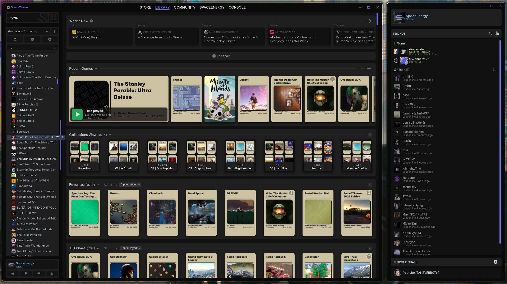
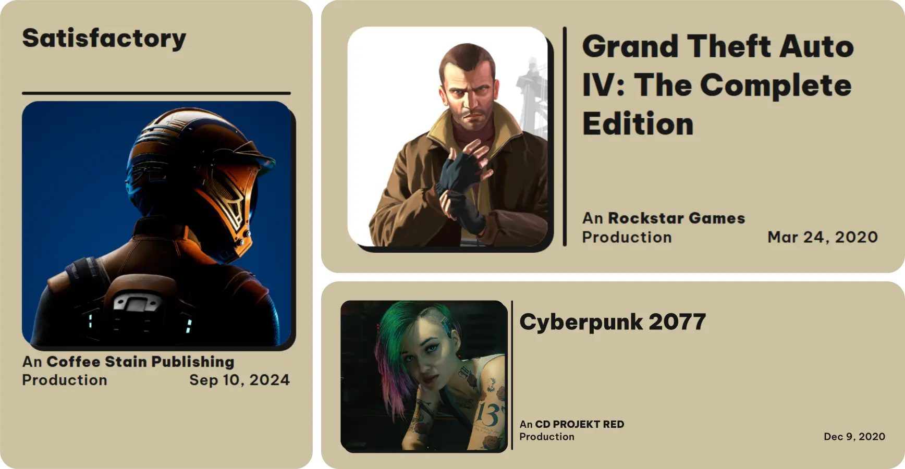
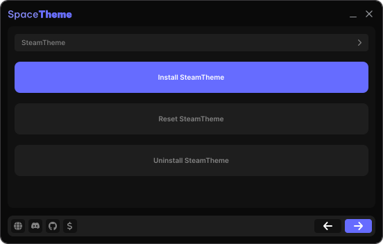

– Downloads
– Stars

01 | Themes
Themes
Themes with a dark, modular design for Steam, Discord, Grub and more. The clean layout makes everything easier to navigate, and most themes can be customized to fit your setup.

02 | Artworks
Steam-Custom-Artworks
A collection of custom covers, banners, heroes and logos for your Steam library, all made in the same style. Unlike SteamGridDB, where every artwork looks different, this keeps your whole library clean and consistent.

03 | Installer
Installer
GUI/CLI tool that installs, updates and removes SpaceTheme themes for you, without having to find the right folders yourself.
04 | Supporter
Made possible
by you ❤️
SpaceTheme is free and open source. These people keep it alive by supporting the project on Ko-fi - thank you!
Latest supporter
Supporters